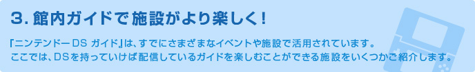
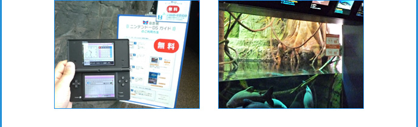
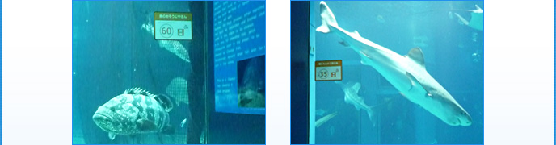
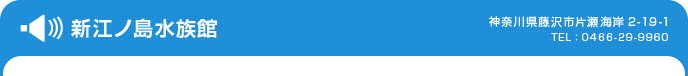
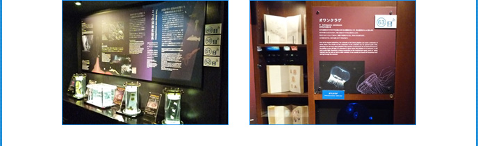
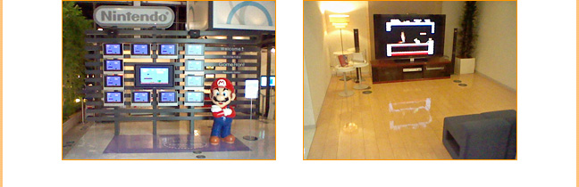
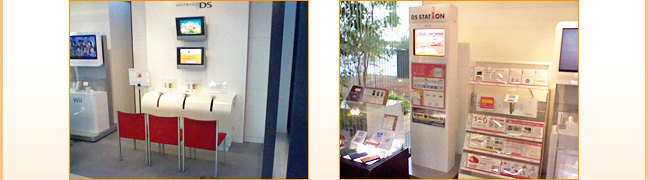

大阪港の目の前にある世界最大級の水族館・海遊館でも、『ニンテンドーDS ガイド』によるガイドを配信しています。ガイドの量は非常に多く、合計26カ所・全76件のガイドが、ほぼすべての常設水槽に用意されています。水槽内の生き物をさがす「さがしてみよう」や「生き物クイズ」などは、ゲーム感覚で楽しむこともできます。
とくに、東京海洋大学客員准教授でタレントとしても有名な「さかなクン」による音声ガイドは、海遊館だけの目玉コンテンツです。こちらは2011年1月10日までの配信なので、ぜひお聞き逃しなく！



神奈川の海岸沿い、江の島を臨む場所にある「えのすい」こと新江ノ島水族館では、海の生き物たちについての写真と音声によるガイドを配信しています。館内で配信されている再生ソフトをダウンロードして、「相模湾大水槽」や「クラゲファンタジーホール」など館内の水槽周辺のさまざまな場所に掲示されている番号札と同じ番号を入力すれば、目の前にいるさまざまな生き物たちの生態や施設のヒミツについて聞くことができます。これであなたも、おさかな博士になれるかも！？

※海遊館・新江ノ島水族館では、業務用DSガイドが使われています。
東京・お台場のパナソニックセンター内にあるニンテンドーゲームフロント。ここではパナソニックの大画面プラズマテレビでWiiのゲームを楽しんだり、ニンテンドーDSソフトの体験版や新作ソフトの映像を見ることができるだけでなく、『ニンテンドーDS ガイド』を使ったスタッフ手作りの館内ガイドが用意されています。ガイドやゲームでひとしきり楽しんだら、DSiのカメラを使って、大きなマリオ像と記念撮影はいかがでしょうか？

